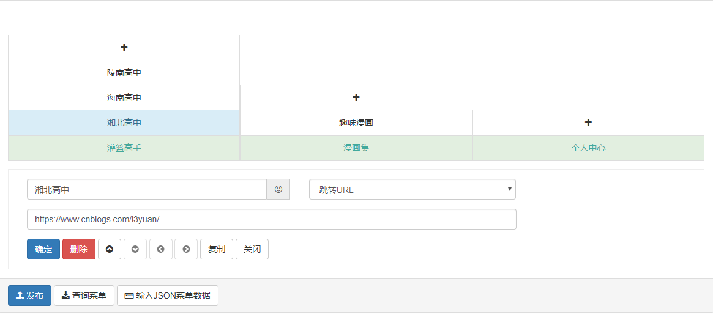
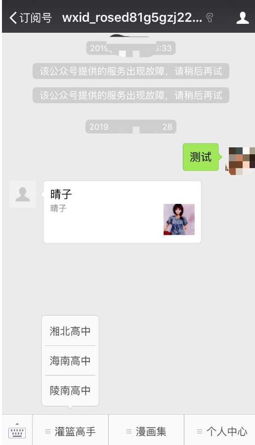

前言:
回顾之前的微信公众号配置和消息处理的内容，我们已经掌握了如何配置服务器与微信公众号建立连接，也掌握了通过消息管理的方式，对用户的信息进行处理，完成公众号消息回复功能，实现公众号与用户之间的完整对话。而在本文将针对自定义菜单做简单的开发应用，微信公众平台具有自定义菜单的功能。开发者可利用该功能为公众账号的会话界面底部增加自定义菜单，用户点击菜单中的选项，可以调出相应的回复信息或网页链接。自定义菜单接口将为公众账号的信息展示空间提供更多可能性。
说明：
1、自定义菜单最多包括3个一级菜单，每个一级菜单最多包含5个二级菜单。
2、一级菜单最多4个汉字，二级菜单最多7个汉字，多出来的部分将会以“...”代替。
3、创建自定义菜单后，菜单的刷新策略是，在用户进入公众号会话页或公众号profile页时，如果发现上一次拉取菜单的请求在5分钟以前，就会拉取一下菜单，如果菜单有更新，就会刷新客户端的菜单。测试时可以尝试取消关注公众账号后再次关注，则可以看到创建后的效果。
类型:
自定义菜单接口可实现多种类型按钮，如下：
1、click：点击推事件用户点击click类型按钮后，微信服务器会通过消息接口推送消息类型为event的结构给开发者（参考消息接口指南），并且带上按钮中开发者填写的key值，开发者可以通过自定义的key值与用户进行交互；
2、view：跳转URL用户点击view类型按钮后，微信客户端将会打开开发者在按钮中填写的网页URL，可与网页授权获取用户基本信息接口结合，获得用户基本信息。
3、scancode_push：扫码推事件用户点击按钮后，微信客户端将调起扫一扫工具，完成扫码操作后显示扫描结果（如果是URL，将进入URL），且会将扫码的结果传给开发者，开发者可以下发消息。
4、scancode_waitmsg：扫码推事件且弹出“消息接收中”提示框用户点击按钮后，微信客户端将调起扫一扫工具，完成扫码操作后，将扫码的结果传给开发者，同时收起扫一扫工具，然后弹出“消息接收中”提示框，随后可能会收到开发者下发的消息。
5、pic_sysphoto：弹出系统拍照发图用户点击按钮后，微信客户端将调起系统相机，完成拍照操作后，会将拍摄的相片发送给开发者，并推送事件给开发者，同时收起系统相机，随后可能会收到开发者下发的消息。
6、pic_photo_or_album：弹出拍照或者相册发图用户点击按钮后，微信客户端将弹出选择器供用户选择“拍照”或者“从手机相册选择”。用户选择后即走其他两种流程。
7、pic_weixin：弹出微信相册发图器用户点击按钮后，微信客户端将调起微信相册，完成选择操作后，将选择的相片发送给开发者的服务器，并推送事件给开发者，同时收起相册，随后可能会收到开发者下发的消息。
8、location_select：弹出地理位置选择器用户点击按钮后，微信客户端将调起地理位置选择工具，完成选择操作后，将选择的地理位置发送给开发者的服务器，同时收起位置选择工具，随后可能会收到开发者下发的消息。
9、media_id：下发消息（除文本消息）用户点击media_id类型按钮后，微信服务器会将开发者填写的永久素材id对应的素材下发给用户，永久素材类型可以是图片、音频、视频、图文消息。请注意：永久素材id必须是在“素材管理/新增永久素材”接口上传后获得的合法id。
10、view_limited：跳转图文消息URL用户点击view_limited类型按钮后，微信客户端将打开开发者在按钮中填写的永久素材id对应的图文消息URL，永久素材类型只支持图文消息。请注意：永久素材id必须是在“素材管理/新增永久素材”接口上传后获得的合法id。
资源：
1、借助Senparc.Weixin SDK
2、只需要前端和控制器，不需要数据库
开始:
控制器：
新建一个UserMessageHandler.cs，实现编辑菜单，获取菜单，删除菜单
1、编辑(新增)菜单
/// <summary>
/// 编辑新增菜单
/// </summary>
/// <param name="resultFull">获取菜单的完整结果</param>
/// <param name="MenuMatchRule">个性化菜单规则</param>
/// <returns></returns>
[HttpPost]
public ActionResult CreateMenu(GetMenuResultFull resultFull, MenuMatchRule MenuMatchRule)
{
// 使用appid 和appsecret 向微信凭证获取接口请求access_token
string AccessToken = Senparc.Weixin.MP.CommonAPIs.CommonApi.GetToken(AppId, AppSecret).access_token; //获取AccessToken值
var IsAddCondidional = MenuMatchRule != null && !MenuMatchRule.CheckAllNull();
var apiName = string.Format("使用接口：{0}。", (IsAddCondidional ? "个性化菜单接口" : "普通自定义菜单接口"));
try
{
//重新整理按钮信息
WxJsonResult result = null;
IButtonGroupBase buttonGroup = null;
if (IsAddCondidional)
{
//个性化接口
//微信公众平台新增了个性化菜单接口，开发者可以通过该接口，让公众号的不同用户群体看到不一样的自定义菜单
buttonGroup = Senparc.Weixin.MP.CommonAPIs.CommonApi.GetMenuFromJsonResult(resultFull, new ConditionalButtonGroup()).menu;
var ConditionalButtonGroup = buttonGroup as ConditionalButtonGroup;
ConditionalButtonGroup.matchrule = MenuMatchRule;
result = Senparc.Weixin.MP.CommonAPIs.CommonApi.CreateMenuConditional(AccessToken, ConditionalButtonGroup);
apiName += string.Format("menuid：{0}。", (result as CreateMenuConditionalResult).menuid);
}
else
{
//普通接口
buttonGroup = Senparc.Weixin.MP.CommonAPIs.CommonApi.GetMenuFromJsonResult(resultFull, new ButtonGroup()).menu;
result = Senparc.Weixin.MP.CommonAPIs.CommonApi.CreateMenu(AccessToken, buttonGroup);
}
var json = new
{
Success = result.errmsg == "ok",
Message = "菜单更新成功。" + apiName
};
return Json(json);
}
catch (Exception ex)
{
var json = new { Success = false, Message = string.Format("更新失败：{0}。{1}", ex.Message, apiName) };
return Json(json);
}
}2、获取菜单
/// <summary>
/// 获取菜单
/// </summary>
/// <returns></returns>
public ActionResult GetMenu()
{
string AccessToken = Senparc.Weixin.MP.CommonAPIs.CommonApi.GetToken(AppId, AppSecret).access_token; //获取AccessToken值
var result = Senparc.Weixin.MP.CommonAPIs.CommonApi.GetMenu(AccessToken);
if (result == null)
{
return Json(new { error = "菜单不存在或验证失败！" }, JsonRequestBehavior.AllowGet);
}
return Json(result, JsonRequestBehavior.AllowGet);
}3、删除菜单
/// <summary>
/// 删除菜单
/// </summary>
/// <returns></returns>
public ActionResult DeleteMenu()
{
try
{
string AccessToken = Senparc.Weixin.MP.CommonAPIs.CommonApi.GetToken(AppId, AppSecret).access_token; //获取AccessToken值
var result = Senparc.Weixin.MP.CommonAPIs.CommonApi.DeleteMenu(AccessToken);
var json = new
{
Success = result.errmsg == "ok",
Message = result.errmsg
};
return Json(json, JsonRequestBehavior.AllowGet);
}
catch (Exception ex)
{
var json = new { Success = false, Message = ex.Message };
return Json(json, JsonRequestBehavior.AllowGet);
}
}
}借助Senparc.Weixin SDK，快速的完成了对普通菜单和个性化菜单的实现。
前端界面：
在前端页面中，我们可以将页面设计为这种布局的样式

请求示例：
{
"button": [
{
"name": "灌篮高手",
"sub_button": [
{
"type": "view",
"url": "https://www.cnblogs.com/i3yuan/",
"name": "陵南高中"
},
{
"type": "view",
"url": "https://www.cnblogs.com/i3yuan/",
"name": "海南高中"
},
{
"type": "view",
"url": "https://www.cnblogs.com/i3yuan/",
"name": "湘北高中"
}
]
},
{
"name": "漫画集",
"sub_button": [
{
"type": "view",
"url": "https://www.cnblogs.com/i3yuan/",
"name": "趣味漫画"
}
]
},
{
"type": "view",
"url": "",
"name": "个人中心"
}
]
}效果：

总结：
1.公众号菜单分为个性化菜单和普通菜单，普通菜单是关注之后就可以查看的，而个性化菜单是根据条件才能看到的（条件：用户标签、性别、手机操作系统、地区、语言），个性化菜单更好实现灵活的业务运营
2.通过开源项目中的Senparc.Weixin SDK，快速的完成菜单的编辑、获取、删除，只需将前端生成的菜单内容转换为对应的json格式，后台获取内容，实现菜单功能